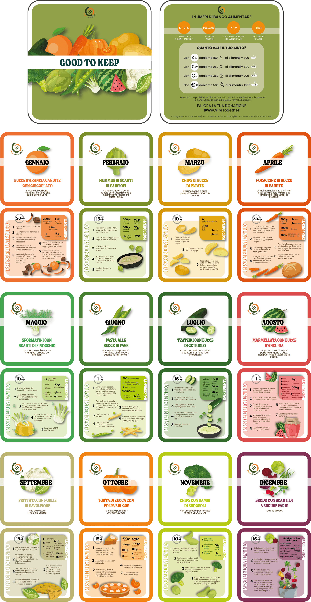

POLITECNICO DI TORINO // DESIGN DI SCENARIO
GOOD TO KEEP
Obiettivo del progetto è stato ricreare un oggetto di merchandising per Banco Alimentare Piemonte. Da qui, l’idea di un ricettario maneggevole, lavabile e dunque riutilizzabile all'infinito. In questo modo diventa 100% sostenibile, così come il messaggio che vuole comunicare. Il ricettario è mensile e vede associata ad ogni mese dell’anno una scheda, facilmente separabile dalle altre così da poter essere spostata in cucina fra ciotole e mestoli con facilità durante l'uso. Ogni scheda racconta una ricetta, creata a partire da quelle parti di frutta o verdura (rigorosamente di stagione) che solitamente vengono scartate, con l'obiettivo di combattere lo spreco alimentare.
